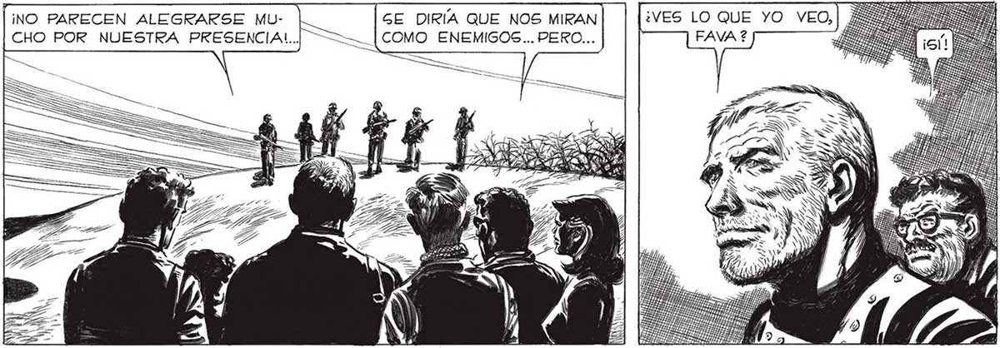
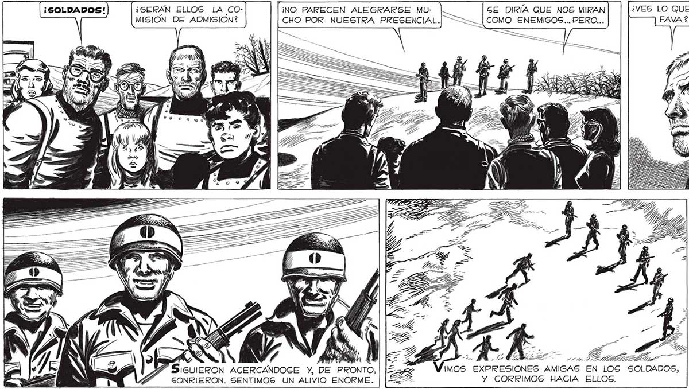

340 ¡SOLDADOS! ¿SERÁN ELLOS LA CO- liINO PARECEN ALEGRARSE MU- GE DIRÍA QUE NOS MIRAN ¿VES LO QUE YO VEO, MISION DE ADMISION? CHO POR NUESTRA PRESENCIA!.| ——— [COMO ENEMIGOS... PERO... A SIGUIERON ACERCÁNDOSE Y, DE PRONTO,| |E 367 AG EN LOG SOLDADOS, GONRIERON. SENTIMOS UN ALIVIO ENORME. LE z Y CORRIMOS HACIA ELLOS. YA LO SE..TAMBIÉN NOSOTROS SOMOS AMIGOS..PERO TIENEN QUE DARNOS ¡ALTO! ¡NO SE ACERQUEN ! | Pa ) Ñ - 2 EA SAS BE ¡st EZ, 2. “tea . 7 14 Las YI ZAS ag” Pa es A PERO... ¿SERA POGIBLE? ¿SERA POGIBLE QUE SEAN HOMBRES: ROBOTS ? ¿POR QUÉ ? ¿ACAGO NO NOS TIENEN CONFIANZA? ¿NOS CREEN AMIGOS DEL INVASOR ? NO, SENOR... NO ES ESO... PERO LA ORDEN ES: QUE TODOS LOS SOBREVIVIENTES QUE LLEGAN DEBEN ENTREGAR LAS ARMAS... ESA ES LA ORDEN, Y HAY QUE RESPETARLA... [Paz SL TaroO EN CONTESTARME, Y, CUANDO LO UIZO, HABLO A REMEZONES, COMO Gl ALGUIEN LE DICTARA... LR A FEINA ll , Y, ] IN / a p o W WN A Pra NN N l VA 14 4 o

